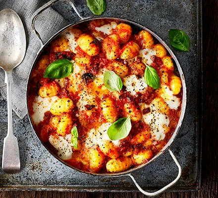

Gnocchi

Image of the Gnocchi
Upgrade cheesy tomato pasta with gnocchi, chorizo and mozzarella for a comforting bake that makes an excellent midweek meal
Ingredients
- 1 tbsp olive oil
- onion
- 2 garlic cloves
- 600g fressh gnocchi
- 1tsp caster sugar
- ONIONS
- 125g mozarella ball
Steps for cooking
- Heat the oil in a medium pan over a medium heat. Fry the onion and garlic for 8-10 mins until soft. Add the chorizo and fry for 5 mins more. Tip in the tomatoes and sugar, and season. Bring to a simmer, then add the gnocchi and cook for 8 mins, stirring often, until soft. Heat the grill to high.
- Stir ¾ of the mozzarella and most of the basil through the gnocchi. Divide the mixture between six ovenproof ramekins, or put in one baking dish. Top with the remaining mozzarella, then grill for 3 mins, or until the cheese is melted and golden. Season, scatter over the remaining basil and serve with green salad.